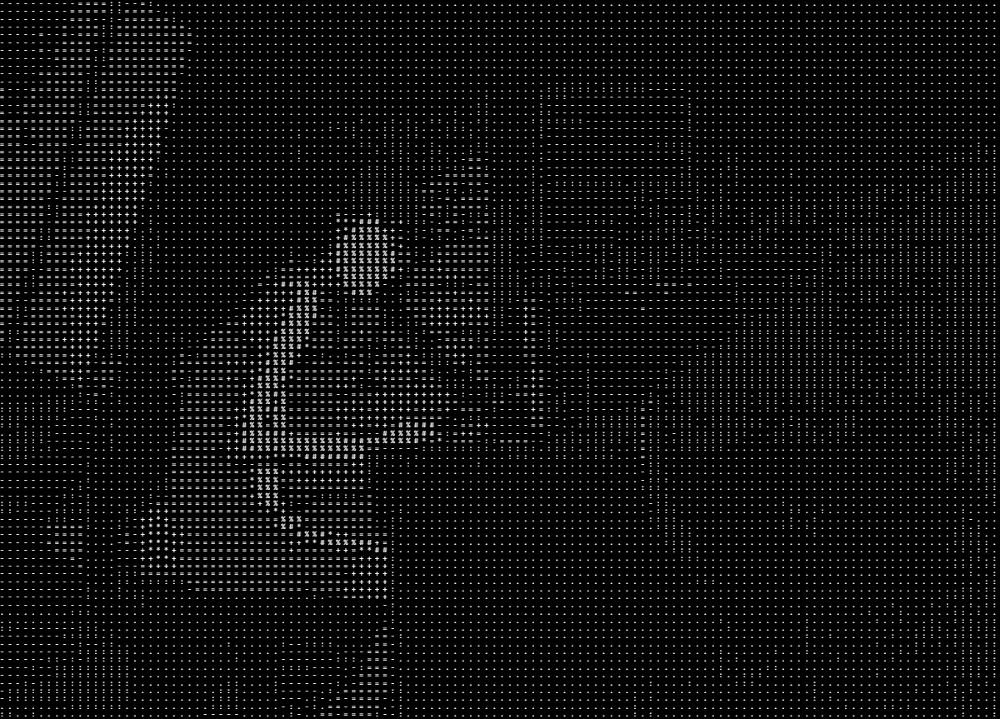

Primeira entry!! Acho que deveria mencionar: com essa revivencia do blog eu finalmente aprendi a usar git e github, to pra chorar de alegria pqp.. também ando obcedada em ascii. eu baixei uma extensao no vs code que fica completando minhas frases com ia e é a coisa mais engraçada: "ela completa tudo com ascii, tipo, eu escrevo "eu gosto de" e ela completa com "gatos" em ascii, ou "eu amo" e ela completa com "cachorros" em ascii, é muito engraçado." diz a ia. btw não tenho muita coisa pra escrever so queria ver como ficava e eu gostei, o blog vai indo e terá mudanças, preciso descobrir alguma forma de fazer ele responsivo no opera e no telefone, porque eu descobri que no opera ele fica todo fudido, mas é isso, talvez faça uma entry de logs também.